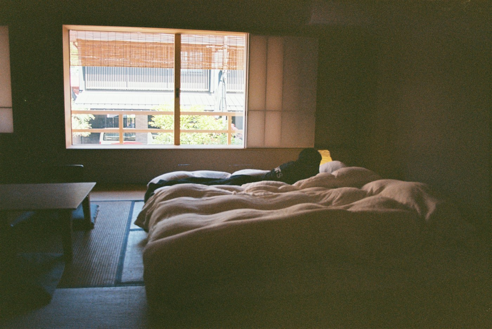
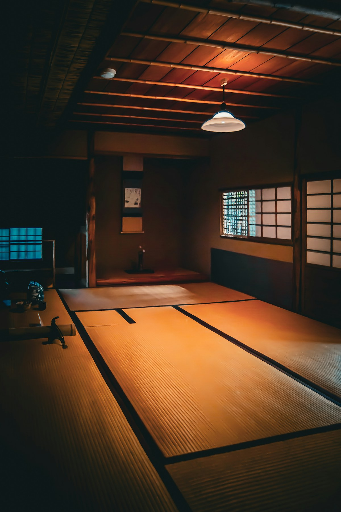

01
Natural-first materials
Designed around plant and natural fibres, with material sourcing and any organic certification to be verified before sale.
Meet Shiki Futon: a natural-material floor mat concept inspired by the Japanese art of simple living and envisioned with a local women’s collective.

しきふとんINSPIRATION IMAGE · NOT A PRODUCT PHOTO
A shikibuton is a Japanese floor mattress. We take inspiration from its practical, uncluttered spirit and imagine a foldable mat for modern homes.
Our concept pairs natural materials with paid production by a partner women’s group. The aim is a useful, beautiful mat with a clear story behind how it is made.
This is an early business concept. Material choice, dimensions and final specifications will be confirmed with a manufacturing partner.
Designed around plant and natural fibres, with material sourcing and any organic certification to be verified before sale.
A floor mat concept that can be folded away, freeing up a room for whatever the day needs next.
The plan is to partner with a women’s group and pay them for making each mat, bringing craft and opportunity into the business model.
Shiki Futon is being designed to support three UN Sustainable Development Goals. These are intended contributions, with outcomes to be measured as the business develops.
Goal alignment is a design intention, not a claim of UN endorsement or verified impact.
Work with a women’s group and pay for their role in production.
Build a repeatable local production partnership with fair, agreed payment.
Prioritise traceable natural materials, considered construction and less unnecessary packaging.
The classroom business starts with a hypothetical ₹500 budget and a proposed ₹2,500 selling price. One sale would bring ₹2,500 in revenue, passing the first ₹1,000 revenue milestone.
The ₹500 production cost is a target, not a verified quote. Packaging, delivery and other expenses still need to be priced before a real launch.
One thoughtfully made floor mat. A Japanese-inspired idea with a local story. Product availability and final specifications are still in development.
A small idea for better living, shaped by natural materials and the hands that make it possible.
Explore the concept ↗